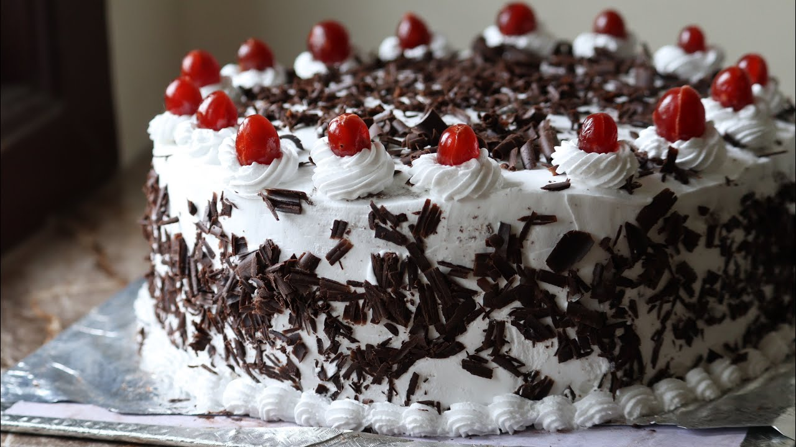

Black Forest Cake

Description
Black Forest cake is a chocolate sponge cake with a cherry filling.
It consists of several layers of chocolate sponge cake sandwiched with whipped cream and cherries.
Ingredients
- 1 (18.25 ounce) package devil's food cake mix with pudding
- 3 eggs
- 1 tablespoon almond extract
- 1 (21 ounce) can cherry pie filling
- 1 ½ cups semisweet chocolate chips
- 1 tablespoon butter
- 2 tablespoons milk
- ½ cup confectioners' sugar
Steps
- Preheat oven to 350 degrees F (175 degrees C).
- Mix together: cake mix, beaten eggs, almond extract, cherry pie filling and 1 cup semisweet chocolate chips. Stir until just combined. Pour batter into a greased 9x13 inch pan.
- Bake in a 350 degree F (175 degree C) oven for 45 to 50 minutes or until a toothpick inserted in the center comes out clean. Remove cake from oven and let cool.
- To Make Glaze: Heat 1/2 cup semisweet chocolate chips, butter or margarine, and milk in a saucepan over medium high heat. Once semisweet chocolate chips are melted and mixture is combined stir in confectioners' sugar.
- Spread glaze over cooled cake. Serve cake as is or with whipped cream and a cherry.
Back to Home